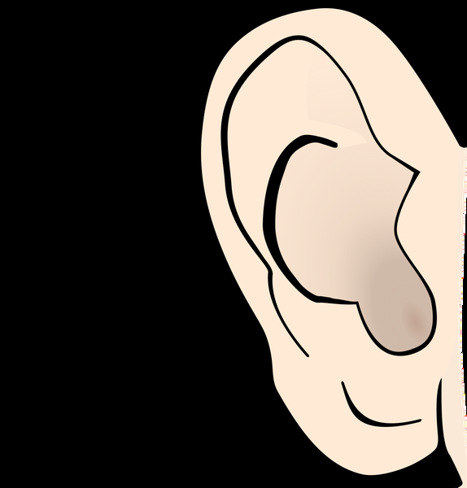

LEMA DE LA MAJ
Uno en Cristo,
unidos en Misión
Uno en Cristo,
unidos en Misión
Padre santo, concédenos ser uno en Cristo,
arraigados a su amor que une y renueva. Haz
que todos los miembros de la Iglesia estén
unidos en la misión, dóciles al Espíritu Santo,
valientes en dar testimonio del Evangelio,
anunciando y encarnando cada día tu amor
fiel por cada criatura.
Bendice a los misioneros y misioneras,
apóyalos en su esfuerzo, presérvalos en la
esperanza.
María, Reina de las misiones, acompaña
nuestra labor evangelizadora en todos los
rincones de la tierra; haznos instrumentos de
tu paz y haz que el mundo entero reconozca
en Cristo la luz que salva.
AMÉN.
Señor Jesús, gracias por
habernos permitido llevar tu
Palabra a quienes hemos
visitado. Ponemos en tus manos
sus peticiones y necesidades,
para que tu amor transforme
sus vidas. Bendice a cada
misionero y fortalécenos en la
fe. Que María, nuestra Madre,
nos siga acompañando y
guiando con su amor.
Amén
Oh Espíritu Santo amor del
Padre y del Hijo, inspírame
siempre lo que debo pensar, lo
que debo decir, como debo
decirlo, lo que debo callar,
cómo debo actuar, lo que debo
hacer para Gloria de Dios,
bien de las almas y
mi propia santificación.
Amén.
Señor Jesús, tú viviste treinta años en el
hogar de Nazaret donde junto a José y
María formaste una familia, imagen de la
Santísima Trinidad. Hoy te venimos a pedir
que bendigas esta familia con tu presencia.
Bendice cada uno de sus integrantes (los
nombramos). Transfórmala en una “pequeña
iglesia doméstica”, donde reine la paz, el
amor y la alegría que tú trajiste al mundo.
Te lo pedimos por la intercesión de María
Santísima, Madre y Reina nuestra, a ti que
vives y reinas por los siglos de los siglos.
Amen.
Hoy, Señor, te doy gracias por esta familia.
Gracias por la vida de cada uno de sus
integrantes. Por sus vidas y testimonios que
son la mejor reserva de paciencia, sabiduría
y amor. Ayúdalos, Señor, a crecer en el amor
y repartirlo, a crecer en experiencia y
compartirla. Conserva esta familia y las
familias de todo el mundo unidas en el
amor, para que entre todas construyamos un
mundo de paz y solidaridad.
Amén
Señor Jesús, Tú tienes un cariño muy especial
por los enfermos. En tu Evangelio apareces
sanando y consolando, fortaleciendo y
perdonando a muchos enfermos graves.
Ten comprensión de esta familia, tan
preocupada por la salud de... (aquí se nombra
al enfermo), dale a él paciencia en su
enfermedad y si es para mayor bien de esta
familia y mayor gloria tuya, alivia de sus
dolores y molestias y sánalo(a) lo más pronto
posible.
Te lo pedimos por intercesión de María, la
Madre de Jesús. Amén.
Señor sabemos que Tú comprendes la
turbación de nuestro corazón, esperas
nuestras preguntas y nos escuchas con
mucha paciencia y misericordia.Ayúdanos,
pues, a comprender la respuesta que nos das
en la Cruz de tu Hijo amado. Danos
profunda fe para aceptar el secreto de tu
mano poderosa, abre nuestro corazón a la
Esperanza, pues tanto nos has amado que
nos entregaste a tu propio Hijo, nuestro
Hermano, Amigo y Señor, Jesucristo.Que
podamos sentir el abrazo y consuelo de
Nuestra Madre María.
Amen
Señor Jesús. Tú dijiste a tus discípulos que no
les dejarías huérfanos, sino que les regalarías
la presencia del Espíritu Santo dado por el
Padre a los que crean en ti.
Tú mismo vienes con tu Palabra a visitarlos.
TU Espíritu santo ha sido derramado en sus
corazones, Te pedimos que ninguno de los que
viven en esta casa se sientan solos y
abandonados. Acrecienta la unidad de esta
familia que tú tanto quieres y haz que todos
se sientan amados y respetados por ti y por
los tuyos.
Amén.
Oh, Dios nuestro, que con tu Providencia
amorosa sostienes y guías toda la creación,
concede a esta familia la gracia de
conseguir prontamente trabajo, que sea
honesto, digno y estable; y que, luego, le
ayudes a ver la tarea laboral como un
camino de santificación, realizándose con
amor y en servicio a los demás, encontrando
al Padre Dios en todas las horas, imitando a
Jesús ya José cuando trabajaban en su
taller de Nazaret. Te lo pedimos por
Jesucristo, nuestro Señor.
Amén.
Te agradecemos, Señor, la acogida que nos
ha brindado esta familia.
Tú despiertas en nosotros un gran respeto
por todos los que buscan la verdad y
nosotros creemos que Tú eres la verdad. Te
pedimos por todos los miembros de esta
familia, para que siempre los alientes en su
camino y descubran en Ti al Señor de la
Vida.
Tú eres la Vida y el Amor. Que quede en ellos
tu paz.
Amén.
Este fuego misionero nos
convoca ya
Que todos seamos uno
como vos nos enseñas
El mundo necesita valientes
testigos de tu amor
Habla Señor que tu siervo
escucha enciende mi
corazón
Unidos en Cristo,
misioneros siempre listos,
preparados para la misión
(su amor nos une y
renueva)
De la mano de María,
donde necesiten su amor
A Jesús Sacramentado lo
quiero llevar
Anunciarlo a mis hermanos
sedientos de su paz
Queremos ser un rosario
viviente
con cada don que das
Poder verte en el hermano,
sé que en el estás
Unidos en Cristo,
misioneros siempre listos,
preparados para la misión
(su amor nos une y
renueva)
De la mano de María,
donde necesiten su amor
Como los discípulos y su
amor puesto en acción
Como hermanos todos
unidos en Cristo a la misión
Unidos en Cristo,
misioneros siempre listos,
preparados para la misión
su amor nos une y renueva
De la mano de María,
donde necesiten su amor
El objetivo del Misionero es
ser instrumento de Dios para
encontrarse y encontrarnos con El.
TE DEJAMOS ESTOS PEQUEÑOS TIPS PARA
QUE LLEVES A CABO TUS MISIONES
El encuentro con el otro se basa en la escucha y en la compañía ,muchas veces más que una palabra de aliento nos piden un oído para poder descargarse , aprendamos a escuchar con el corazón, seamos pacientes, amables y educados.

TE DEJAMOS ESTOS PEQUEÑOS TIPS PARA
QUE LLEVES A CABO TUS MISIONES
A la hora de salir a misionar, pedile a Jesús que tus ojos sean los de Él, para tener una mirada comprensiva y amable, pedile que tu boca sea la de Él para transmitir palabras de paz y amor y pedile que tus oídos sean los de El para escuchar con paciencia y amabilidad
TE DEJAMOS ESTOS PEQUEÑOS TIPS PARA
QUE LLEVES A CABO TUS MISIONES
Mientras vas a destino, anda de forma alegré transmitiendo la buena noticia pero siempre concentrado en lo que vas hacer y con quien te vas a encontrar, que las cosas externas de la misión no te saquen de foco de lo que estás por hacer
TE DEJAMOS ESTOS PEQUEÑOS TIPS PARA
QUE LLEVES A CABO TUS MISIONES
Muchas veces nos vamos a topar con situaciones que no nos abren o no se encuentran en el hogar, que eso no sea motivo de desgano, sino que impulse un momento de oración entre patrullas ya sea para la casa a la que fueron como así también para las familias que viven ahí
TE DEJAMOS ESTOS PEQUEÑOS TIPS PARA
QUE LLEVES A CABO TUS MISIONES
La misión no termina una vez que salimos de las casas o nos quedamos sin casas para misionar, después sigue una misión personal entre nuestro mismo grupos, para así poder compartir y retroalimentarnos de los frutos de la misión
Invocar al Espíritu Santo en nuestro camino a la misión, pedirle por un corazón como el de Jesús Ileno de amor, misericordia y compasión hacia los demás, que el sea quien interceda por nosotros
Un saludo cordial y una presentación adecuada ayuda a generar un ambiente de confianza
Buen dia, buenas tardes, de donde soy, a que se debe mi visita, etc.
Conocer a la persona/ familia crea una base solida para una relación significativa y un dialogo fluido Edad/ estudios/ trabajos/oficios/ hobbies/ gustos
Compartir tiempo y experiencias con la familias y con el otro , el compartir tiene que ser de una manera bidireccional lo que nos ayudara a establecer confianza con ellos. Compartir como vivir la fe en la vida cotidiana puede ser un gran aliento
Cuando un misionero escucha con el corazon transmite una actitud de amor y compasión. Es muy importante una escucha atenta para poder adaptar un mensaje de Fe mas significativo para la persona
Llega el momento de dejarles un mensaje de Fe, de esperanza, de amor, compartir en familia alguna cita bíblica, poder rezar juntos, evangelizar al modo de Jesús hablando con el otro.Se pueden realizar gestos misioneros, como dejarles agua bendita, bocaditos, bendecir casas, entre otros.
Dejarle la información a familias sobre misas/ talleres y cualquier otra información para que ellos puedan acercarse en base a sus tiempos.
Un corazón agradecido, es un corazón con amor, dar las gracias por abrir las puertas de su hogar y de sus vidas. Recordarles que pueden contar ustedes y con la comunidad para apoyarse en el camino de la Fé
Roja: San Cayetano
Celeste: Barrio Las Casillas
ÁFRICA COMPLETO
Negrita: Barrio San Martín
Lote Ferrocarril- Conjunto VII
Rojo: B° Raúl Gómez
Celeste: B° Las Viñas
Barrio conjunto 5
Control forestal
Virgen de guadalupe- lote de alvarez
ASIA 1,2,3
La Puntilla
OCEANIA COMPETO-OCEANÍA FAMILIAS
Centro